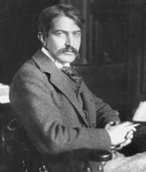

|
Of all our nineteenth-century masters of
fiction--Hawthorne, Melville, Henry James, Mark Twain and
Stephen Crane--it was Crane, the youngest, arrived most
distantly from the Civil War in point of time, who was the
most war-haunted. Born in Newark, New Jersey, six years
after the firing ceased, Crane was the youngest of fourteen
offspring of parents whose marriage marked the union of two
lines of hard-preaching, fundamentalist Methodist ministers.
The time and place of his birth and his parents' concern
with conduct, morality and eloquence were, when joined with
his self-dedication to precise feeling and writing, perhaps
as portentous and as difficult a gift to bear as any seer's
obligation to peer through walls and into the secret places
of the heart, or around windy corners and into the enigmatic
future. Indeed, such words as "clairvoyant," "occult" and
"uncanny" have been used to describe his style, and while
these tell us little, there was nonetheless an inescapable
aura of the marvelous about Stephen Crane. For although
there is no record of his eyes having been covered at birth
with that caul which is said to grant one second sight, he
revealed a unique vision of the human condition and an
unusual talent for projecting it. His was a costly vision,
won through personal suffering, hard living and harsh
artistic discipline; and by the time of his death, at
twenty-nine, he was recognized as one of the important
innovators of American fictional prose and master of a
powerful and original style.
Fortunately it was the style and not the myth which was
important. Thus today, after sixty years during which there
was little interest in the meaning and sources of Crane's
art, the best of the work remains not only alive but capable
of speaking to us with a new resonance of meaning. While
recent criticism holds that the pioneer style, which leads
directly to Ernest Hemingway, sprang from a dedication to
the moral and aesthetic possibilities of literary form
similar to that of Henry James, Crane's dedication to art
was no less disciplined or deadly serious than that which
characterized his preaching forefathers' concern with
religion.
The Effects of Christianity
Surely if fundamentalist Christianity could get so
authoritatively into national politics (especially in the
Bible Belt), so ambiguously into our system of education (as
in the Scopes trial issue [pitting evolution against
creationism]), into our style of crime (through
prohibition's spawn of bootleggers, gangsters, jellybeans
and flappers) and so powerfully into jazz--it is about time
we recognized its deeper relationship to the art of our
twentieth-century literature. And not simply as subject
matter, but as a major source of its technique, its form and
rhetoric. For while much has been made of the role of the
high church in the development of modern poetry, Crane's
example suggests that for the writer a youthful contact with
the emotional intensity and harsh authority of American
fundamentalism can be as important an experience as contact
with those churches which possess a ritual containing
elements of high art and a theology spun subtle and fine
through intellectualization. Undoubtedly the Methodist
Church provided Crane an early schooling in the seriousness
of spiritual questions--of the individual's ultimate
relationship to his fellow men, to the universe and to
God--and was one source of the youthful revolt which taught
him to look upon life with his own eyes. Just as important,
perhaps, is the discipline which the church provided him in
keeping great emotion under the control of the intellect, as
during the exciting services (which the boy learned to
question quite early), along with an awareness of the
disparity between the individual's public testimony (a rite
common to evangelical churches) and his private deeds--a
matter intensified by the fact that the celebrant of this
rite of public confession was his own father. In brief,
Crane was concerned very early with private emotions
publicly displayed as an act of purification and
self-definition; an excellent beginning for a writer
interested in the ordeals of the private individual
struggling to define himself as against the claims of
society. Crane, who might well have become a minister,
turned from religion but transferred its forms to his art.
For his contemporaries much of the meaning of Crane's art
was obscured by a personal myth compounded of elements ever
fascinating to the American mind: his youth and his early
mastery of a difficult and highly technical skill (like a
precocious juvenile delinquent possessed of an uncanny
knowledge not of pocket pool, craps or tap dancing, but of
advanced literary technique) coupled with that highly
individual way of feeling and thinking which is the basis of
all significant innovation in art; his wild bohemian way of
life; his maverick attitude toward respectability; his
gallantry toward prostitutes no less than toward their
|

Stephen Crane
|
respectable sisters; his friendship with Bowery
outcasts--"What Must I Do to Be Saved?" was the title of a
tract by his mother's uncle, the Methodist Bishop of
Syracuse and a founder of the university there; his
gambler's prodigality with fame and money; his search for
wars to observe and report; and, finally, the fatality of
"genius" which followed the fair, slight, gifted youth from
obscurity to association with the wealthy and gifted in
England (Joseph Conrad, H.G. Wells, Ford Madox Ford and
Henry James were among his friends), to his death from
tuberculosis, one of the period's most feared and
romanticized scourges, in the far Black Forest of Germany.
At the center of Crane's myth there lay, of course, the
mystery of the creative talent with which a youth of
twenty-one was able to write what is considered one of the
world's foremost war novels when he had neither observed nor
participated in combat. And, indeed, with this second book,
The Red Badge of Courage, Crane burst upon the
American public with the effect of a Civil War projectile
lain dormant beneath a city square for thirty years. Two
years before he had appeared with Maggie: A Girl of the
Streets, a stripped little novel of social protest
written in a strange new idiom. But although Hamlin Garland
and William Dean Howells had recognized the work's
importance, the reading public was prepared neither for such
a close took at the devastating effect of the Bowery upon
the individual's sense of life, nor for the narrow choice
between the sweatshop and prostitution which Crane saw as
the fate of such girls as Maggie. Besides, with its ear
attuned to the languid accents of genteel fiction it was
unprepared for the harsh, although offbeat, poetic realism
of Crane's idiom.
In a famous inscription in which he exhorted a reader to
have the "courage" to read his book to the end, Crane
explained that he had tried to show that:
environment is a tremendous thing in the world, and
frequently shapes lives regardless. If one proves that
theory, one makes room in heaven for all sorts of souls,
notably an occasional street girt, who are not confidently
expected to be there by many excellent people
It is a statement which reveals that the young author
knew the mood of his prospective audience much better than
it was prepared to know him. For although Crane published
Maggie at his own expense (significantly, under a
pseudonym) and paid four men to read it conspicuously while
traveling up and down Manhattan on the El, it failed.
The Red Badge of Courage
This was for American literature a most significant
failure indeed; afterward, following Maggie, Crane
developed the strategy of understatement and the technique
of impressionism which was to point the way for Hemingway
and American fiction of the twenties. Crane was not to
return to an explicit projection of his social criticism
until "The Monster," a work written much later in his
career; he turned, instead, to exploring the psychology of
the individual under extreme pressure. Maggie stands with
The Adventures of Huckleberry Finn as one of the
parents of the modern American novel; but it is The Red
Badge of Courage which claims our attention with all the
authority of a masterpiece.
For all our efforts to forget it, the Civil War was the
great shaping event not only of our political and economic
life, but following Crane, of our twentieth-century fiction.
It was the agency through which many of the conflicting
elements within the old republic were brought to maximum
tension, leaving us a nation fully aware of the continental
character of our destiny, preparing the emergence of our
predominantly industrial economy and our increasingly urban
way of life, and transforming us from a nation consisting of
two major regions which could pretend to a unity of values,
despite their basic split over fundamental issues, to one
which was now consciously divided. To put it drastically, if
war, as Clausewitz insisted, is the continuation of politics
by other means, it requires little imagination to see
American life since the abandonment of the Reconstruction as
an abrupt reversal of that formula: the continuation of the
Civil War by means other than arms. In this sense the
conflict has not only gone unresolved but the line between
civil war and civil peace has become so blurred as to
require of the sensitive man a questioning attitude toward
every aspect of the nation's self-image. Stephen Crane, in
his time, was such a man.
In The Bed Badge social reality is filtered
through the sensibility of a young Northern soldier who is
only vaguely aware of the larger issues of the war, and we
note that for all the complex use of the symbolic
connotations of blackness, only one black character, a
dancing teamster, appears throughout the novel. The reader
is left to fill in the understated background, to re-create
those matters of which the hero, Henry Fleming, is too
young, too self-centered and too concerned with the more
immediate problems of courage, honor and self-preservation
to be aware. This leaves the real test of moral courage as
much a challenge to the reader as to the hero; he must
decide for himself whether or not to confront the public
issues evoked by Henry's private ordeal. The Bed
Badge is a novel about a lonely individual's struggle
for self-definition, written for lonely individualists, and
its style, which no longer speaks in terms of the
traditional American rhetoric, implies a deep skepticism as
to the possibility of the old American ideals being revived
by a people which had failed to live up to them after having
paid so much to defend them in hardship and blood. Here in
place of the conventional plot--which implies the public
validity of private experiences--we find a series of vividly
impressionistic episodes that convey the discontinuity of
feeling and perception of one caught up in a vast impersonal
action, and a concentration upon the psychology of one who
seeks first to secede from society and then to live in it
with honor and courage.
Indeed, for a novel supposedly about the war, The Red
Badge is intensely concerned with invasion of the
private life, a theme announced when the men encounter the
body of their first dead soldier, whose shoe soles, "worn to
the thinness of writing paper," strike Henry as evidence of
a betrayal by fate which in death had exposed to the dead
Confederate's enemies "that poverty which in life he had
perhaps concealed from his friends." But war is nothing if
not an invasion of privacy, and so is death (the
"invulnerable" dead man forces his way between the men as
they open ranks to avoid him); and society, more so. For
society, even when reduced to a few companions, invades
personality and demands of the individual an almost
impossible consistency while guaranteeing the individual
hardly anything. Or so it seems to the naive Henry, much of
whose anguish springs from the fear that his friends will
discover that the wound which he received from the rifle
butt of another frightened soldier is not the red badge of
courage they assume but a badge of shame. Thus the Tattered
Soldier's questions as to the circumstance of his injury
(really questions as to his moral identity) fill Henry with
fear and hostility, and he regards them as the assertion of
a society that probed pitilessly at secrets until all is
apparent. His late companion's chance persistency made him
feel that he could not keep his crime [of malingering]
concealed in his bosom. It was sure to be brought plain by
one of those arrows which cloud the air and are constantly
pricking, discovering, proclaiming those things which are
willed to be forever hidden. lie admitted that he could not
defend himself against this agency. It was not within the
power of vigilance.
In time Henry learns to act with honor and courage and to
perceive something of what it means to be a man, but this
perception depends upon the individual fates of those who
make up his immediate group; upon the death of Jim Conklin,
the most mature and responsible of the men, and upon the
Loud Soldier's attainment of maturity and inner
self-confidence. But the cost of perception is primarily
personal, and for Henry it depends upon the experience of
the moral discomfort which follows the crimes of malingering
and assuming a phony identity, and the further crime of
allowing the voice of conscience, here symbolized by the
Tattered Soldier, to wander off and die. Later he acquits
himself bravely and comes to feel that he has attained a
quiet manhood, non-assertive but of sturdy and strong blood.
He knew that he would no more quail before his guides
wherever they should point. He had been to touch the great
death, and found that, after all, it was but the great
death. He was a man. Obviously although Henry has been
initiated into the battle of life, he has by no means
finished with illusion--but that, too, is part of the human
condition.
That The Red Badge was widely read during Crane's
own time was a triumph of his art, but the real mystery lay
not in his re-creation of the simpler aspects of battle: the
corpses, the wounds, the sound of rifle fire, the panic and
high elation of combat--the real mystery lay in the courage
out of which one so young could face up to the truth which
so many Americans were resisting with a noisy clamor of
optimism and with frantic gestures of materialistic denial.
War, the jungle, and hostile Nature became Crane's
underlying metaphors for the human drama and the basic
situations in which the individual's capacity for moral and
physical courage were put to their most meaningful testing.
Conclusion
Ultimately, Crane stands as the link between the Twain of
Puddnhead Wilson and Huckleberry Finn and the
Faulkner of The Sound and the Fury. Between Twain and
the emergence of the driving honesty and social
responsibility of Faulkner, no artist of Crane's caliber
looked so steadily at the wholeness of American life and
discovered such far-reaching symbolic equivalents for its
unceasing state of civil war. Crane's work remains fresh
today because he was a great artist, but perhaps he became a
great artist because under conditions of pressure and panic
he stuck to his guns.
Source: Ralph Ellison, "Stephen Crane and the Mainstream of American Fiction" in
Shadow and Act, (New York: Random House, 1995), 60-75.
|